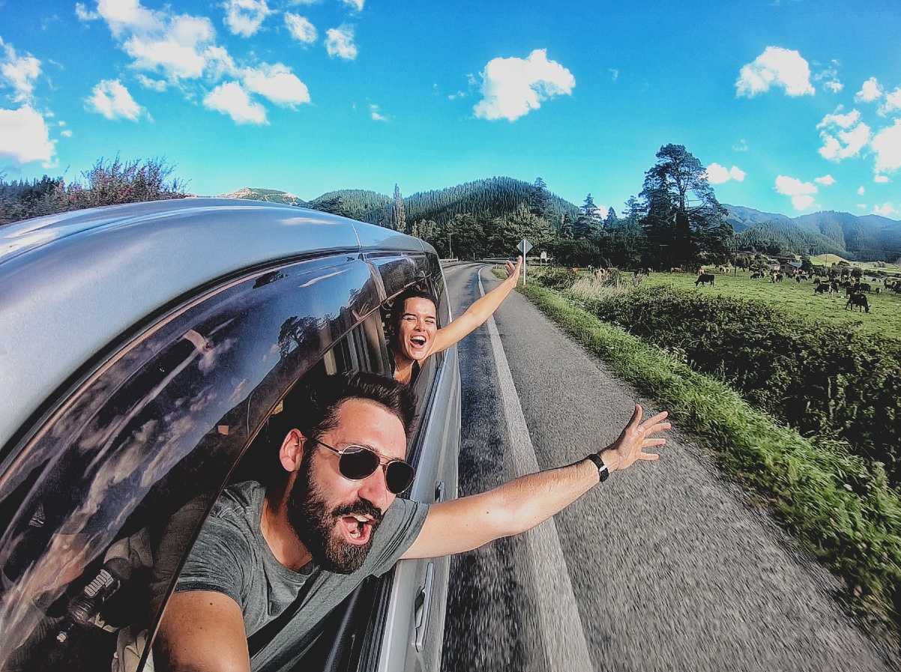

Prototypage
Pills est une application de musique qui se veut innovante en permettant l'émergence de nouveaux artistes Hip Hop en France.
L'application dispose de plusieurs fonctionnalités.
J’ai imaginé la fonctionnalité d’enregistrer ses propres Freestyle de Rap et de les mixer avec une liste de beats disponibles sur la plateforme pour publier le tout sur le profil de l’artiste.
Le but étant de gagner en visibilité auprès du public.

MVP
Flair est une application de Géolocalisation.
L'objectif est de fournir un Mimimum Viable Product montrant les fonctionnalités de
l'application.
Nous proposons donc les fonctionnalités suivantes:
- Création de groupes d'amis pour le festival en question
- Localisation des amis sur la carte
- Itinéraire rejoindre un ami
- Options pour contacter l'ami en question


Persona
Combigo est un site internet innovant, poposant des fonctionnalités qui permettent de
personnaliser au mieux ses voyages
Slow -Trip (voyage lent) est au coeur du sujet.
Après l'administration d'un questionnaire nous avons analysé les résultats afin de définir le
Persona primaire ci-contre

Ateliers d'idéation
L'entreprise Guestwiew fournit des livres d’or numériques dans différents
sites
culturels afin que les visiteurs puissent donner un retour d’expèrience.
Nous avons été chargé de répondre à 3 problématiques pour la création d’une nouvelle version de
ses
bornes tactiles à travers la mise en place de 4h d’ateliers d’idéation.
Les problématiques auxquelles nous souhaitions répondre sont les suivantes:
- Localisation de la borne dans le site culturel
- Attractivité de la borne
- Interface de la borne
Sous la responsabilité de notre professeur Pierre Minelli, Nous avons mis en place 4 ateliers dans un contexte futuriste afin d’immerger les participants:
- Un atelier Ice breaker afin de détendre les participants à travers un jeu de role
- Un atelier Crache ta Valda afin d’obtenir tous les problèmes qui pousse le visiteur à ne pas laisser d’avis
- Un atelier Brainwriting afin de solutionner ses problèmes
- Un atelier Décision afin de hierarchiser les solutions et les améliorer par un débat
Nouvelle-Zélande

En 2018, je suis parti à voyager à l'étranger pendant une année entière.